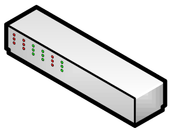

<h2>Add Static flow</h2>
<form id="flowform1" name="flowform1" action="/addflow" method="post" target="myIframe">
	SwitchID:<select id="selsw" name="switchid"></select><br/>
	FlowName:<input type="text" name="flowname"><br/>
	<input type="checkbox" id="ip_base" name="ip_base"  onchange=ActiveInput(this.id,"src_ip","dst_ip")>IP_base<br/>
	Src_IP:<input type="text" id="src_ip" name="src_ip" disabled="true" >
	Dst_IP:<input type="text" id="dst_ip" name="dst_ip" disabled="true" ><br/>
	<input type="checkbox" id="mac_base" name="mac_base" onchange=ActiveInput(this.id,"src_mac","dst_mac")>MAC_base<br/>
	Src_MAC:<input type="text" id="src_mac" name="src_mac" disabled="true">
	Dst_MAC:<input type="text" id="dst_mac" name="dst_mac" disabled="true"><br/>
	<input type="checkbox"  id="port_base"  name="port_base" onchange=ActiveInput(this.id,"inport","inport")>PORT_base<br/>
	In_port:<input type="number" id="inport" name="inport" disabled="true"><br/>
	
	<input type="checkbox"  id="protocol_base"  name="protocol_base" onchange=ActiveRatio(this.id,"ICMP","UDP","TCP")>Protocol_base<br/>
	<input type="radio" id="ICMP" name="protocol" value="ICMP" checked disabled="true" onchange=ActivePortInput()>ICMP
	
	<input type="radio" id="TCP" name="protocol" value="TCP" disabled="true"  onchange=ActivePortInput()>TCP
	tcp_src: <input type="number" id="tcp_src" name="tcp_src" disabled="true">
	tcp_dst: <input type="number" id="tcp_dst" name="tcp_dst" disabled="true">
	
	<input type="radio" id="UDP" name="protocol" value="UDP" disabled="true" onchange=ActivePortInput()>UDP
	udp_src: <input type="number" id="udp_src" name="udp_src" disabled="true">
	udp_dst: <input type="number" id="udp_dst" name="udp_dst" disabled="true"><br/>
	
	IdleTimeout <input type="number" name="idletimeout">
	HardTimeout <input type="number" name="hardtimeout"><br/>
	Actions: 
	<input type="radio" id="drop"  name="actions" value="drop" checked onchange=ActiveInput("out_port","out_port_n","out_port_n")>drop
	<input type="radio" id="flood" name="actions" value="flood" onchange=ActiveInput("out_port","out_port_n","out_port_n")>flood
	<input type="radio" id="out_port" name="actions" value="out_port" onchange=ActiveInput("out_port","out_port_n","out_port_n") >
	out_port: <input type="number" id="out_port_n" name="out_port_n" disabled="true"><br/>
	
	
	<input id="subform" type="Button" value="AddFlow" onclick=SubFlowForm();><br/><br/><br/>
</form>

<iframe name="myIframe" style="display:none"></iframe>  
